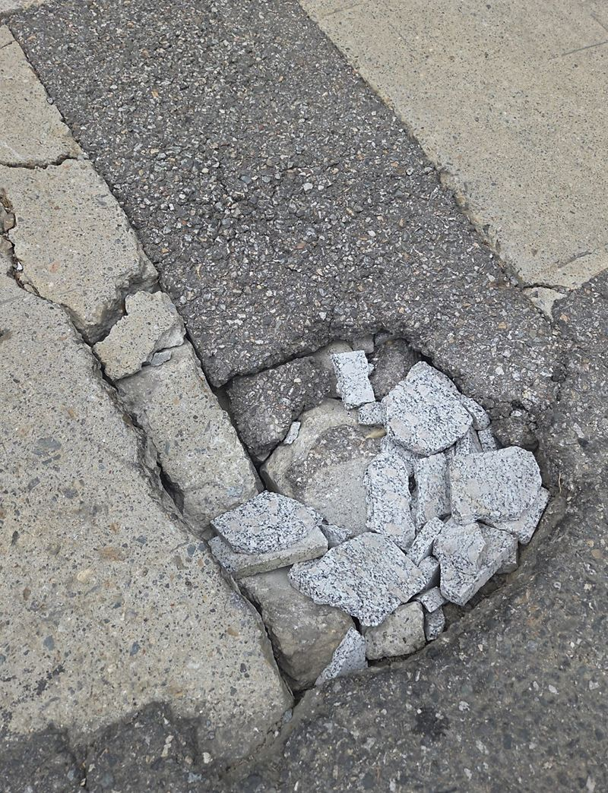
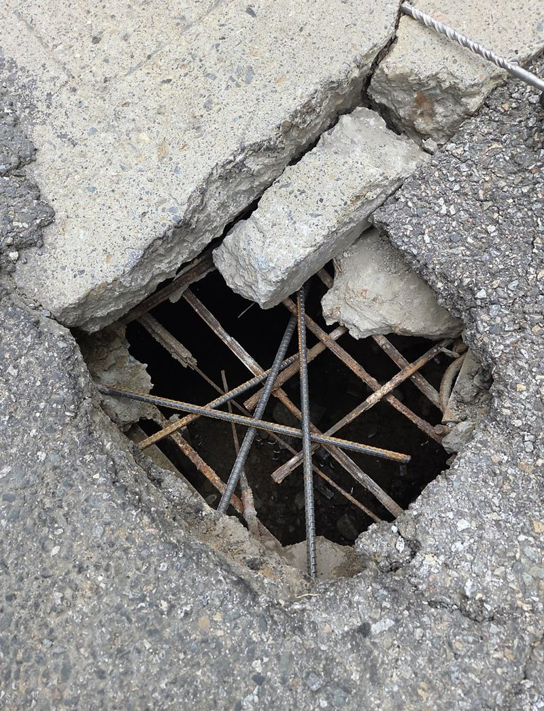
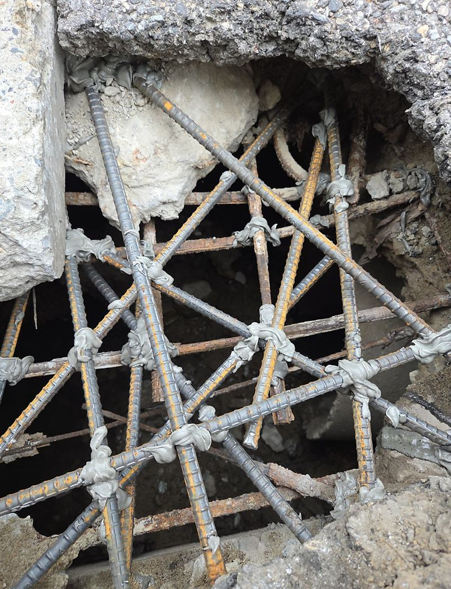
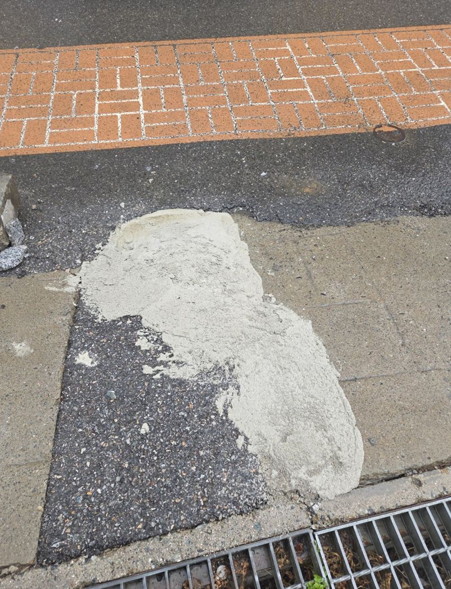
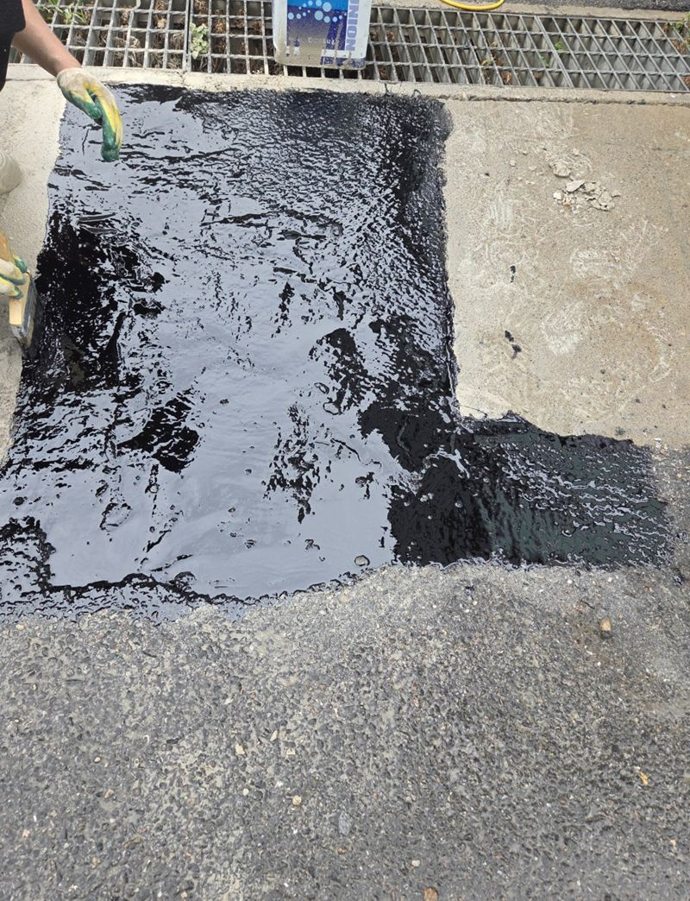
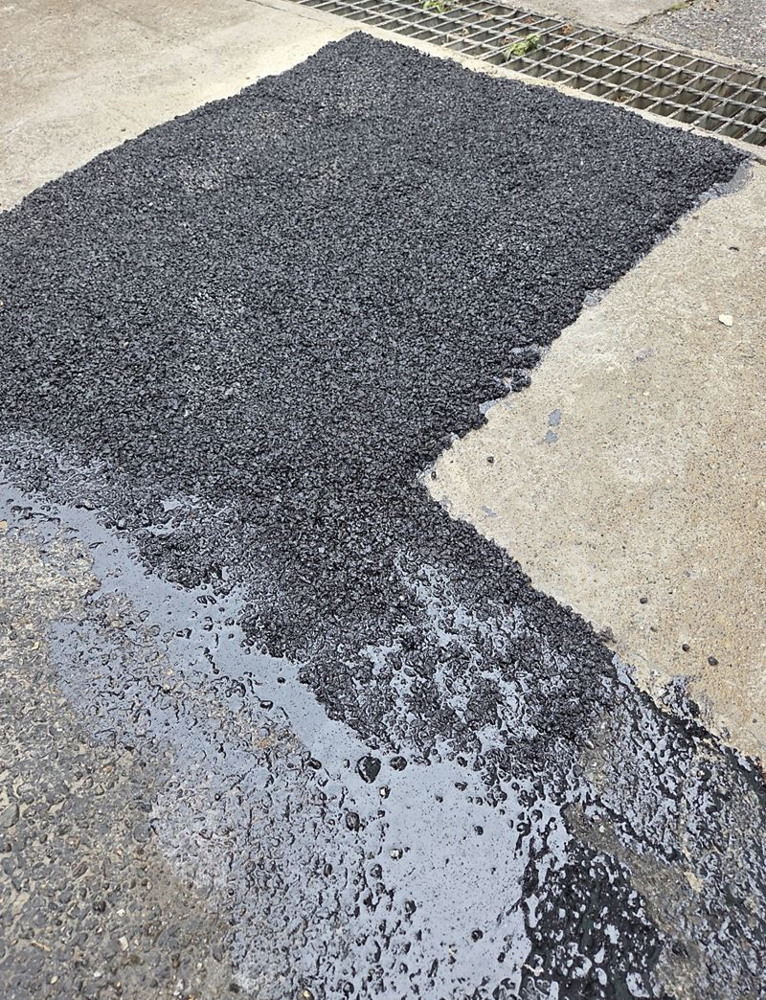

김포 소형 싱크홀 아스콘 부분 보수 방법
← 밀어서 전후 비교 →
"주차장 땅이 내려앉으면서 갈라지더니 작은 구멍까지 생겼어요. 차가 지나는 곳이라 더 커질까 봐 걱정돼요." 김포 양촌읍 주택 앞 주차장이었어요. 배수구 옆 바닥이 꺼져 아스팔트가 갈라지고, 손가락 몇 개 들어갈 구멍이 뚫려 있었어요. 아래가 얼마나 비었는지 모르는 상태라 겉만 덮을 수는 없었어요. 갈라진 범위를 파내 하부를 확인하고, 잡석을 채워 다진 뒤 철근을 넣어 몰탈로 기초를 만들고, 마지막에 아스콘으로 표면을 덮었어요.
| 현장 | 김포 양촌읍 주택 앞 주차장, 배수구 옆 |
|---|---|
| 증상 | 바닥 내려앉음, 갈라짐, 작은 구멍 |
| 한 일 | 범위 정하고 파내기 → 하부 유실 확인 → 잡석 채움·다짐 → 철근 배근 → 몰탈 충전 → 아스콘 표면 마감 → 높이·통행 확인 |
| 판단 | 배관 이상은 보이지 않아 지반부터 안정 |
겉만 덮으면 안 되는 이유
표면만 갈라진 거라면 균열 정리로 끝나요. 하지만 바닥이 꺼지고 구멍까지 났다면, 그 아래 흙이 쓸려 나가 빈 공간이 생겼다는 뜻이에요. 위만 아스콘으로 덮으면 그 무게가 빈 공간 위에 얹혀, 몇 번 차가 지나가면 다시 내려앉아요. 아스콘은 마지막 옷일 뿐이고, 버티는 힘은 그 아래 다짐과 기초에서 나와요.
| 상태 | 필요한 처리 |
|---|---|
| 얕은 갈라짐 | 표면 균열 정리 |
| 땅꺼짐 | 하부 유실·빈 공간 확인 |
| 구멍 발생 | 잡석 다짐과 기초 보강 |
| 같은 자리 반복 | 배수관 확인까지 |
작은 싱크홀 보수 순서
파내고 하부 확인
갈라진 선을 따라 약해진 부분을 걷어 내고, 아래가 얼마나 비었는지 봤어요.


잡석과 철근
빈 공간을 잡석으로 채워 꾹꾹 다지고, 몰탈이 더 단단히 잡히도록 철근을 엮어 넣었어요.

몰탈 기초
몰탈을 빈틈 사이로 스며들게 채우고, 바닥 높이가 크게 틀어지지 않게 맞췄어요.

아스콘 마감
몰탈이 자리 잡은 뒤 차가 다닐 수 있게 아스콘을 덮고 주변과 높이를 맞췄어요.


배관 점검까지 해야 할까
가장 확실한 건 배수관 전체를 확인하는 거예요. 다만 범위가 넓어지면 비용이 크게 늘어요. 이 현장은 파 보니 눈에 띄는 배관 문제가 없어서, 먼저 꺼진 곳을 단단히 안정시키고 같은 자리가 또 꺼지면 그때 배관을 보기로 했어요. 당장 주차장을 써야 하는 상황에도 맞는 방법이었어요.
마감 후에는 꺼진 구간이 다 메워졌는지, 주변과 높이 차가 없는지, 차 바퀴가 걸리는 데가 없는지 확인했어요. 고객분은 "구멍이 커질까 불안했는데 파내서 안쪽까지 채워 주니 마음이 놓인다, 바로 주차장을 쓸 수 있어 좋다"고 하셨어요.
같은 집 다른 자리, 다른 방법
이 주차장은 얼마 뒤 맨홀 둘레가 꺼진 다른 자리도 손봤어요. 그쪽은 접시처럼 얕게 내려앉아 잡석과 몰탈만으로 충분했고, 이번 자리는 구멍이 뚫리고 깊어서 철근과 아스콘까지 썼어요. 꺼진 모양과 깊이에 따라 방법이 달라져요.
작은 싱크홀 질문
아스콘 대신 몰탈로만 끝내도 되나요?
가능해요. 다만 주변이 아스팔트면 색과 질감이 달라 보여요.
철근은 왜 넣나요?
차 무게가 실리는 자리라 몰탈이 갈라지지 않게 뼈대 역할을 해요.
보수 후 비가 오면 괜찮나요?
다 굳은 뒤라면 괜찮아요. 굳기 전 비 소식이 있으면 날을 옮겨요.
구멍이 점점 커지고 있어요.
아래 빈 공간이 넓어지는 중일 수 있어요. 차를 피해 두고 빨리 연락 주세요.
공용 도로에 생긴 싱크홀이에요.
공공 도로는 관할 기관에 신고하는 게 먼저예요.
작업 동안 차를 뺄 수 없어요.
보수 구간만 막고 진행할 수 있는지 사진을 보고 상의해요.
다른 바닥 보수 현장
구멍 난 자리를 가까이, 주차장 전체를 멀리서 찍어 보내 주세요.
전화 상담 010-4517-9872